Линейка из шести авторских техник, которые превращают мебельный фасад из утилитарной детали в самостоятельный декоративный объект. Все покрытия наносятся вручную — каждая поверхность приобретает индивидуальную фактуру и неповторимый характер.
Линейка покрытий, которые превращают мебельный фасад из утилитарной детали в самостоятельный декоративный объект.
Все материалы наносятся вручную. Это означает естественную вариативность — лёгкие следы располировки, неповторяющиеся стыки, патина в углублениях фрезеровки. Эти особенности заложены в эстетику материала и подтверждаются согласованным образцом перед запуском заказа.
Покрытия подходят для фасадов и декоративных панелей. Для рабочих поверхностей (столешниц, фартуков) — не рекомендуются: материалы создавались как декоративные.
Декоративное покрытие на основе металлической пудры (до 95% состава) и полимерного связующего. После нанесения и располировки даёт настоящую металлическую поверхность.
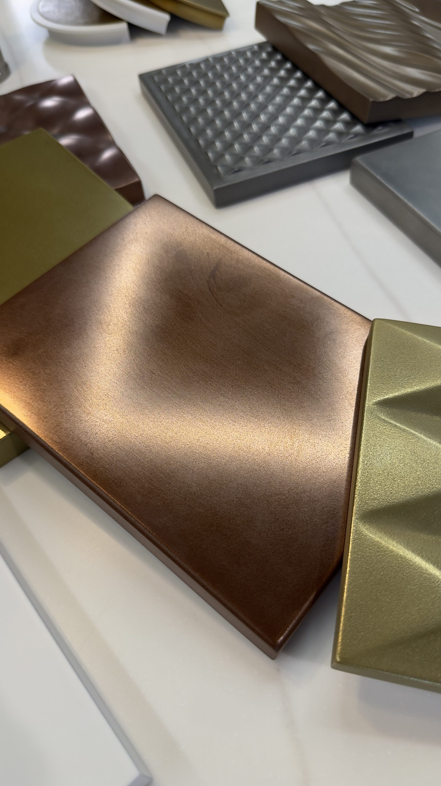

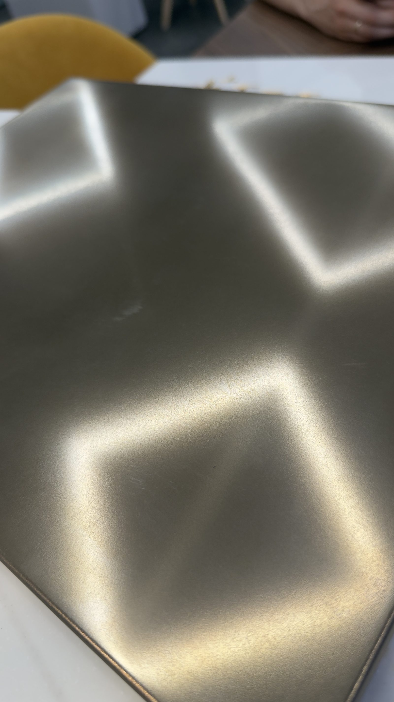
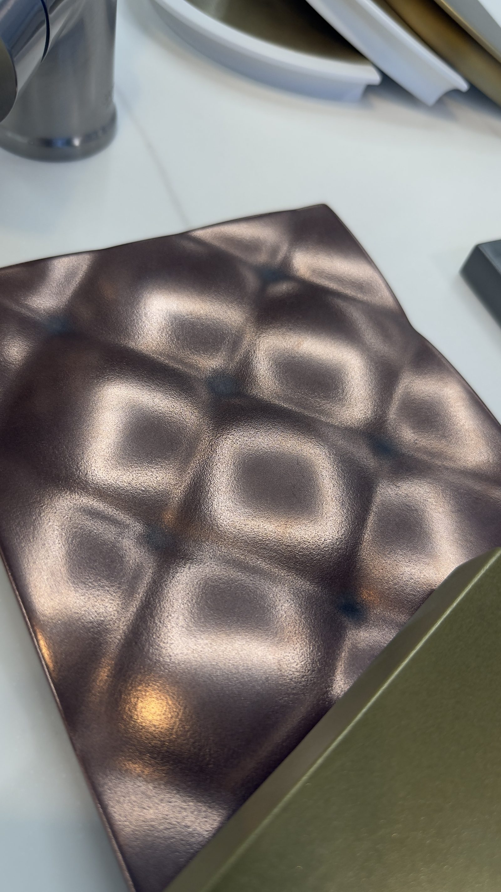
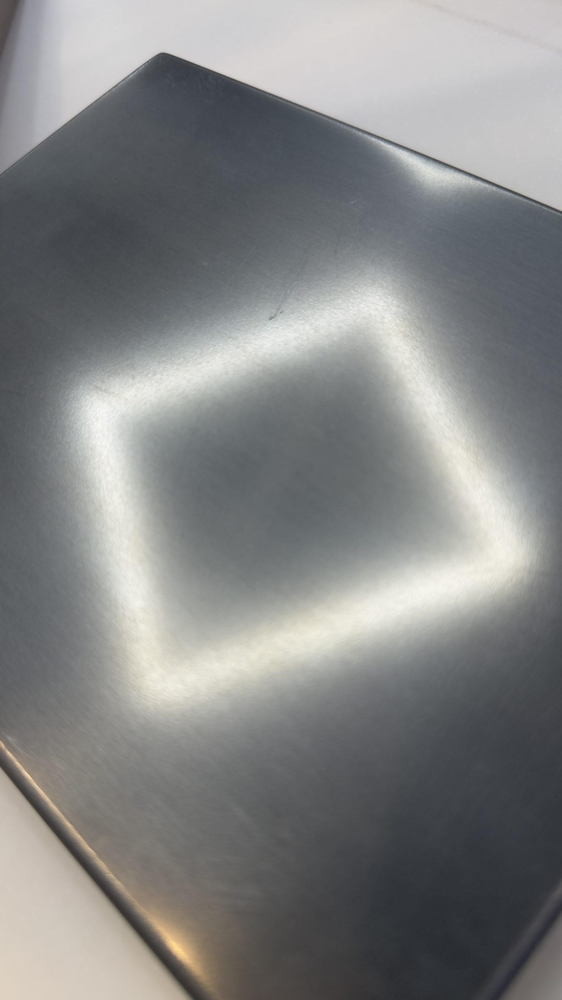
На данный момент существует две степени подготовки изделия в жидком металле.
Применима только к гладким деталям и гладким деталям с текстурой, исполняется только на них. Полировка гладких изделий без текстуры имеет более высокий глянец, чем на изделиях с текстурой.
Доступна для гладких, гладких текстурных и объёмных 2D и 3D деталей. На сложной геометрии металл шлифуется полуматово.
Степень шлифовки и полировки зависит от конкретного изделия и может немного изменяться в зависимости от глубины и формы изделия.
На сложной геометрии металл шлифуется полуматово, а во фрезеровке остаются тёмные участки, похожие на эффект патины, который проявляется естественно во время ручной обработки.
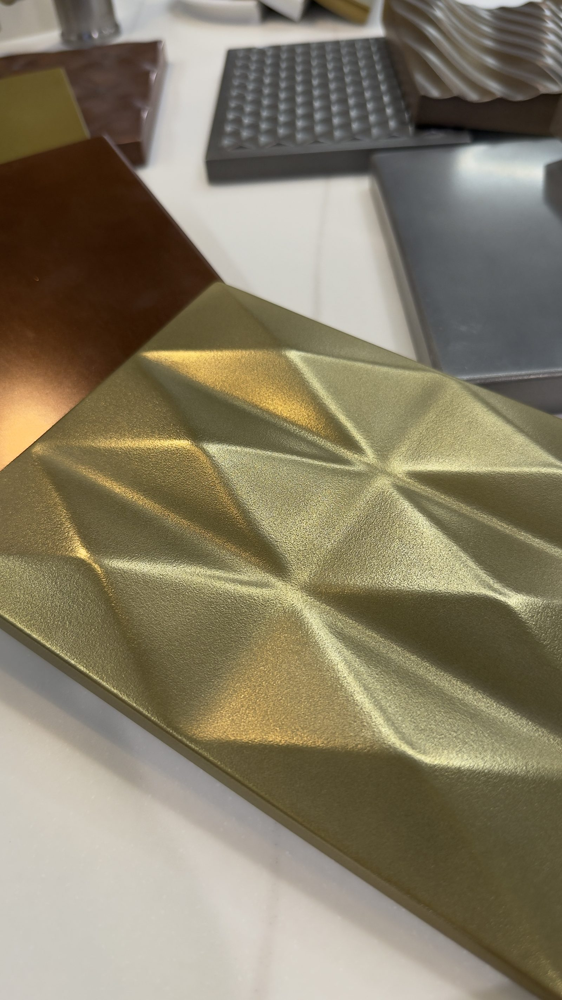
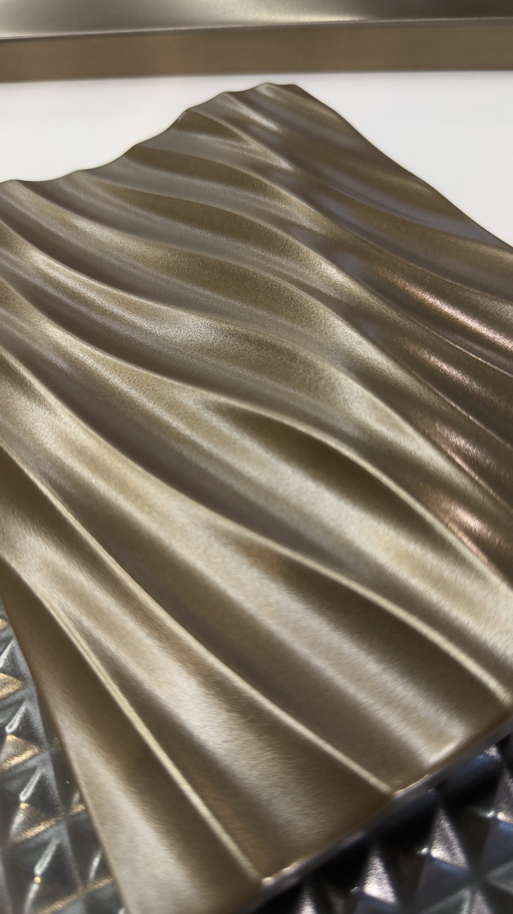
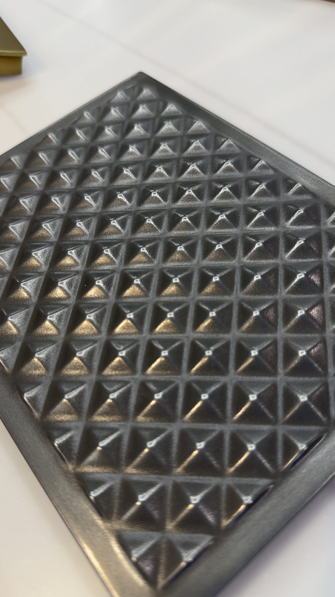
На фасадах (двери, ящики, панели) покрытие ведёт себя безупречно — механические нагрузки минимальны.
Гладкие фасады — глянец, шлифовка, авторские потёртости. Возможна располировка до зеркального блеска.
Рельефные и фрезерованные — шлифовка, во фрезеровке остаются тёмные участки нерасполированного металла. Это эстетика, отсылающая к старинной патине: чем сложнее модель — тем выраженнее эффект.
Штапик и сложная геометрия — итоговый вид близок к 3D с тёмными вкраплениями типа патины.
В базовой линейке — 3 фактуры с фиксированными названиями (формируются совместно с производством). Цена — фиксированная за каждую фактуру.
Возможно смешение цветов — наложение одного металла на другой даёт авторские градиенты и многослойные эффекты.
Финишная защита входит в стоимость (33 000 ₽ / м²) и предотвращает окисление:
— Полиуретановый лак — высокая стойкость к истиранию и бытовой химии. Делает поверхность ближе к спецэффекту с глубиной.
— Воск — максимальная защита от влаги и бытовой химии при сохранении натуральной тактильности металла.
— Без защиты — поверхность остаётся в чистом виде, но возможно постепенное окисление (как у голой латуни).
Уход: мягкая губка или микрофибра, нейтральные моющие средства — без абразивов, кислот и щелочей.
Декоративное покрытие с эффектом металла на современной водной основе. Сочетает визуальную глубину металла и более экологичный состав. Это не металл как таковой (в отличие от жидкого металла), а особая техника нанесения спецэффекта.

Покрытие «Водный металл» доступно в 12 базовых оттенках, которые открывают широкие возможности для создания как сдержанных, так и эффектных интерьерных решений. Ниже — два показательных образца, полная палитра у менеджеров.
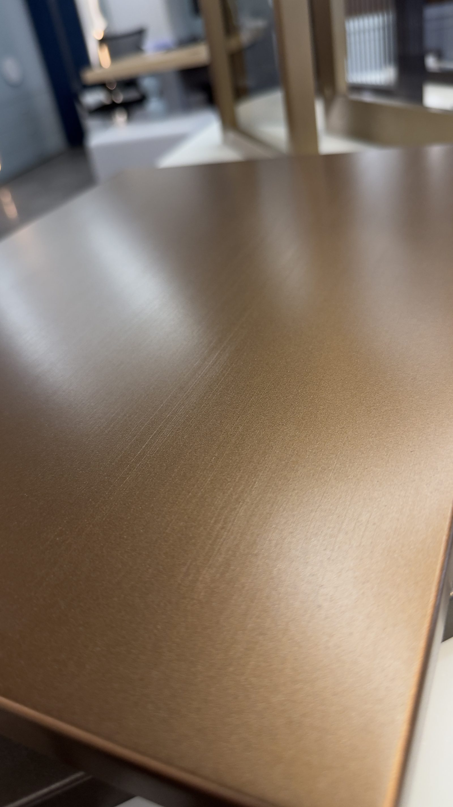
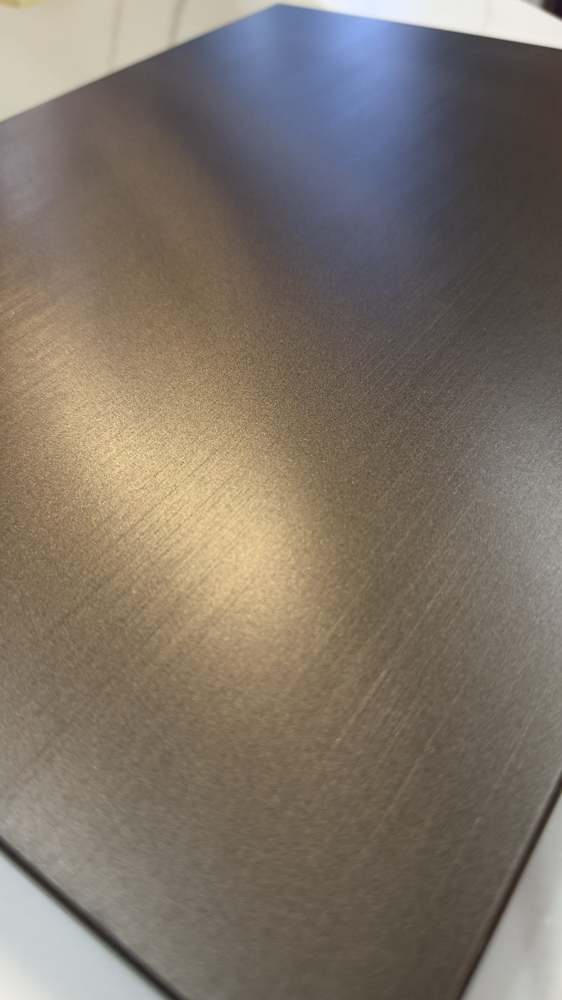
Важно: поверхность получается грубее, чем у эмали, и напоминает грубую матовую покраску — могут быть тактильно ощутимые вкрапления. Благодаря этому следов от пальцев остаётся заметно меньше, чем на обычной эмали. Базовый вариант изготавливается без брашировки, вставки шпона и лака — покрытие само по себе достаточно прочное. После нанесения матового лака эффект выглядит немного иначе. Возможно исполнение с брашировкой и без, со вставками шпона и защитным матовым лаком — за дополнительную плату.
Стоимость м² готового фасада со вставкой шпона (полоска любой формы и размера) рассчитывается по прайс-листу с учётом выбранного шпона.
В фасад с водным металлом можно вставить любой вид шпона с открытыми порами под матовым лаком. Получается сочетание холодной металлической поверхности и тёплой натуральной древесины в одном изделии.
Вставка выполняется отдельным этапом по уже готовому фасаду. Это позволяет точно контролировать совмещение материалов и геометрию рисунка.
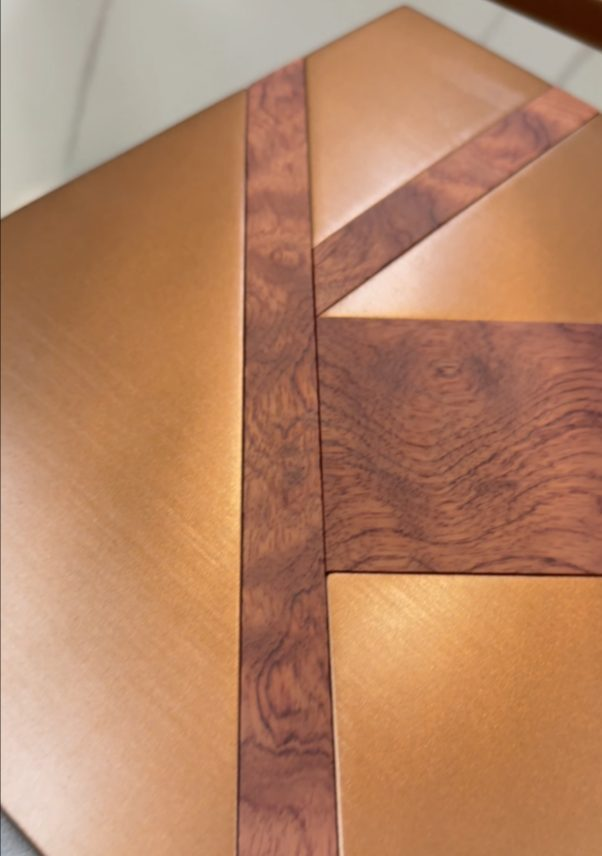
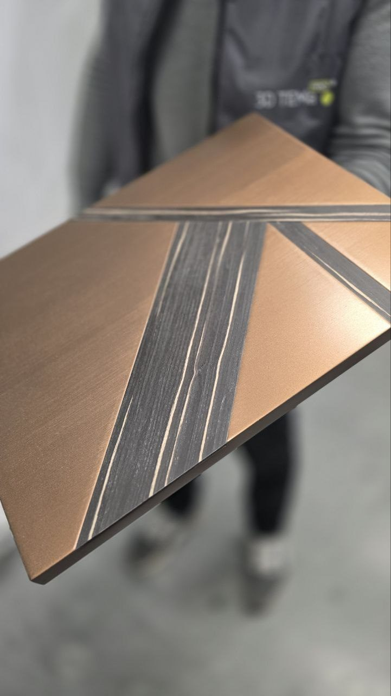
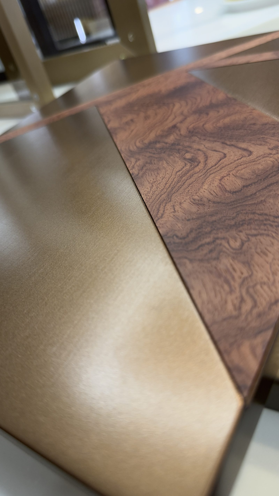
Подходит для мебельных фасадов и декоративных панелей.
— Для дополнительной защиты возможно нанесение акрилового лака. Он даёт небольшую глубину и слегка меняет оттенок и фактуру (при наличии брашировки).
— Без лака покрытие остаётся максимально приближённым к натуральному состоянию (водные компоненты) и обладает достаточно высокими эксплуатационными качествами, как обычная эмаль.
Уход: мягкая губка или микрофибра, нейтральные моющие средства — без абразивов, кислот и щелочей.
Премиум-покрытия с эффектом старения, которые сочетают эстетику, лёгкую текстуру, современный дизайн и приятную тактильность. Наносятся из краскопульта, затем тампонируются и растираются руками — отсюда индивидуальный характер каждого фасада.
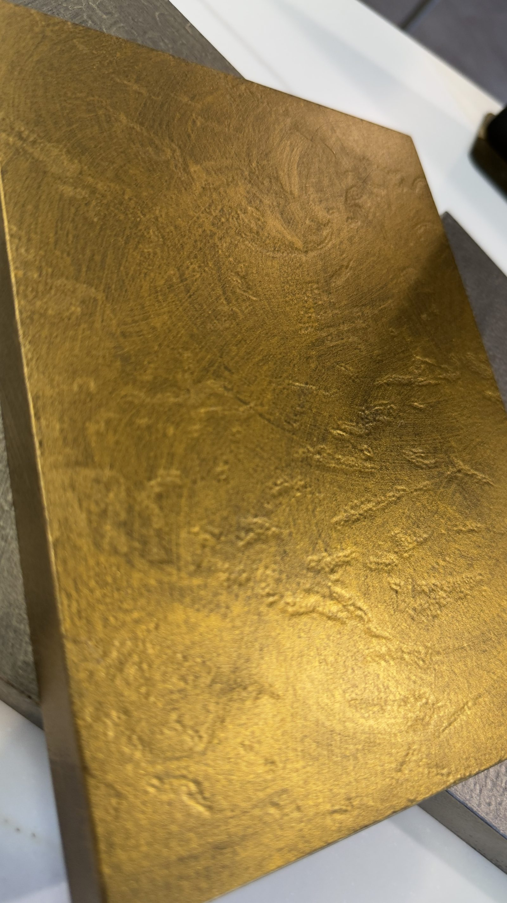
Покрытие декоративными маслами доступно в 13 цветах и 3 текстурах. Их можно комбинировать между собой, а при необходимости мы разработаем индивидуальную текстуру под проект. Эффекты достигаются при помощи одной из трёх базовых текстур — на него ложится масло и проявляется текстура.
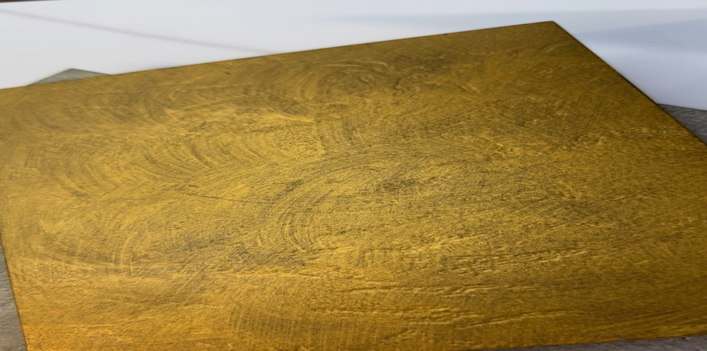
Доступные цвета · линейка Renner
Техника нанесения: масло наносится из краскопульта, затем тампонируется и растирается руками. Именно ручная фаза создаёт неповторимость каждой поверхности — два фасада в одном цвете и фактуре будут визуально близкими, но не идентичными. Это особенность премиум-линии.
Полная палитра из 13 оттенков — у менеджеров. В каталоге выделены три базовых, на которых отработаны наши фирменные текстуры:

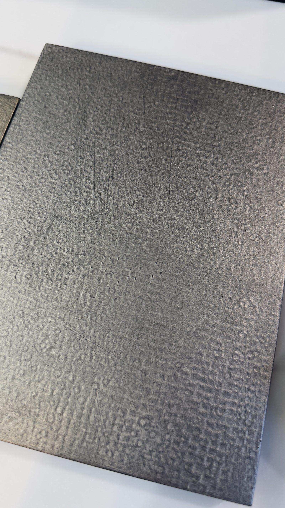
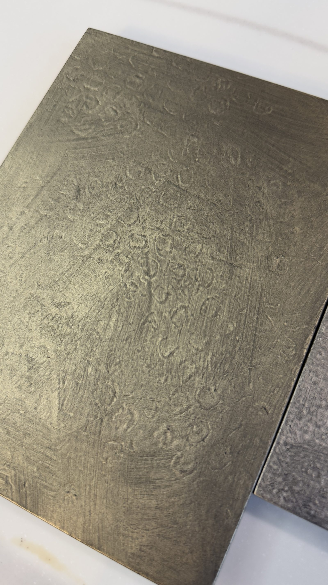
Эффект старения достигается при помощи одной из трёх базовых фактур — на неё ложится масло и проявляется рисунок. Любая из трёх фактур накладывается на любой из 13 оттенков.
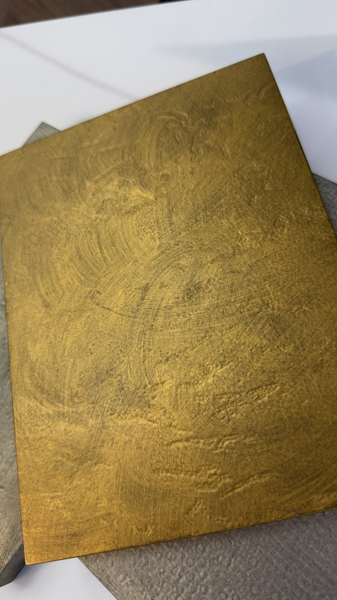
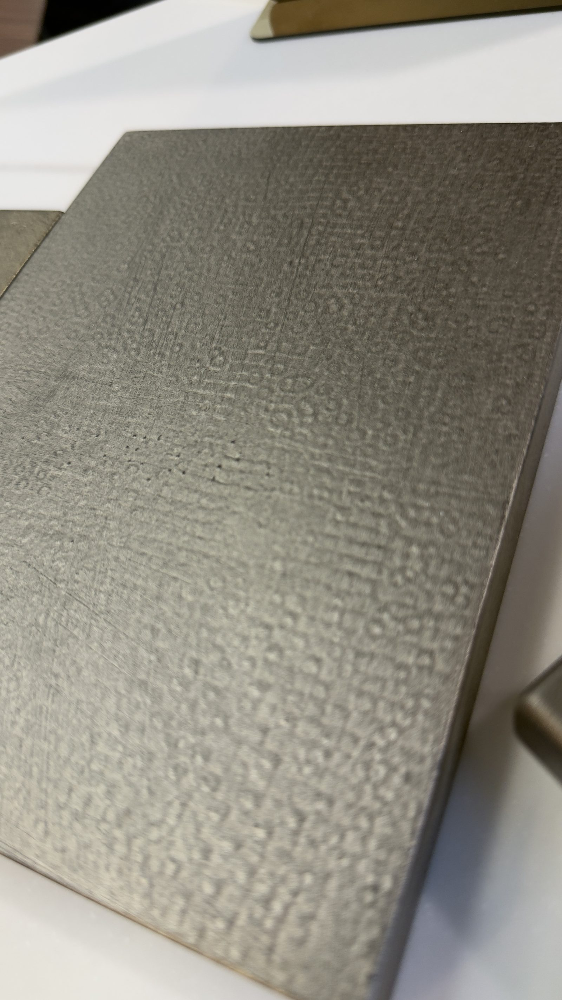
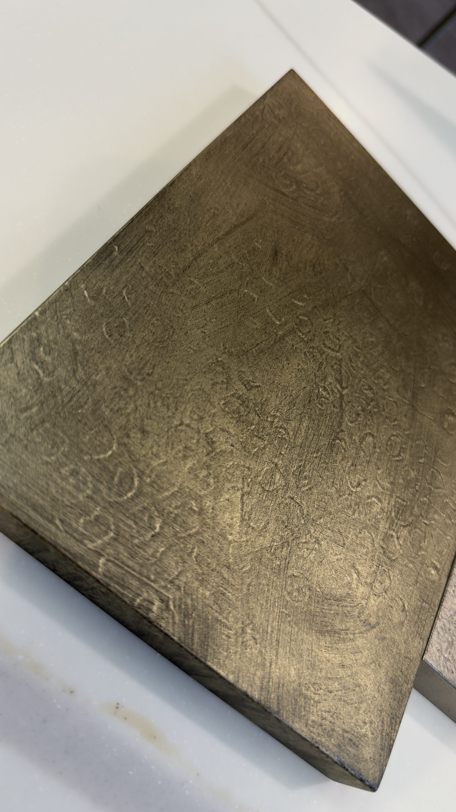
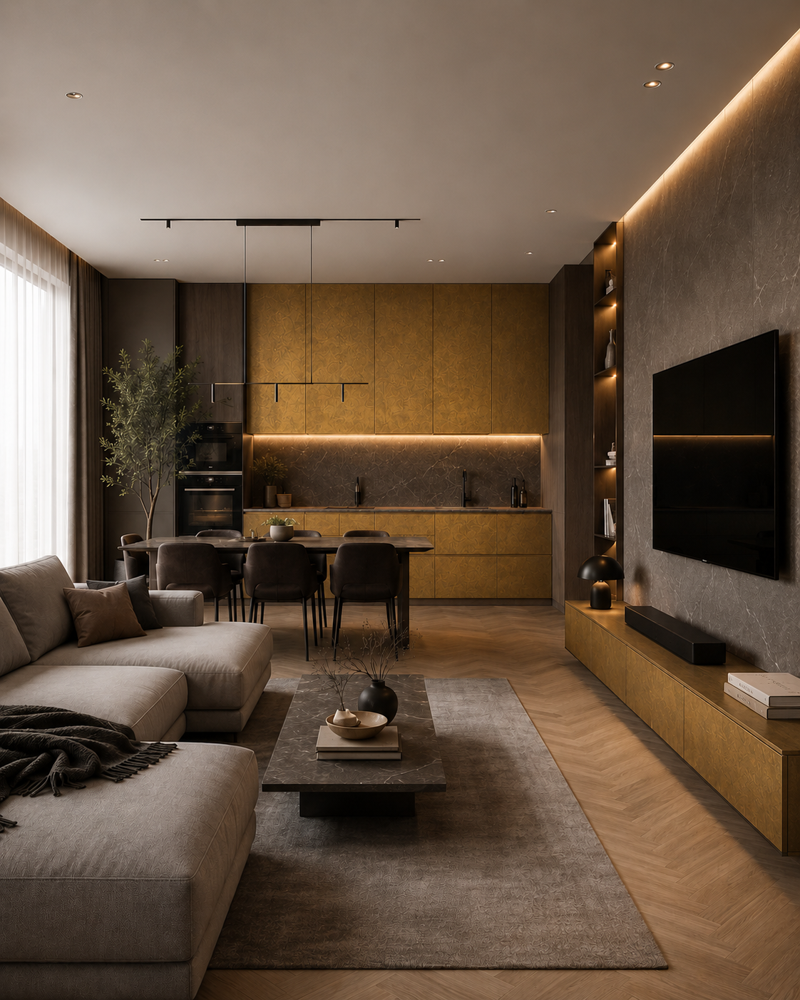
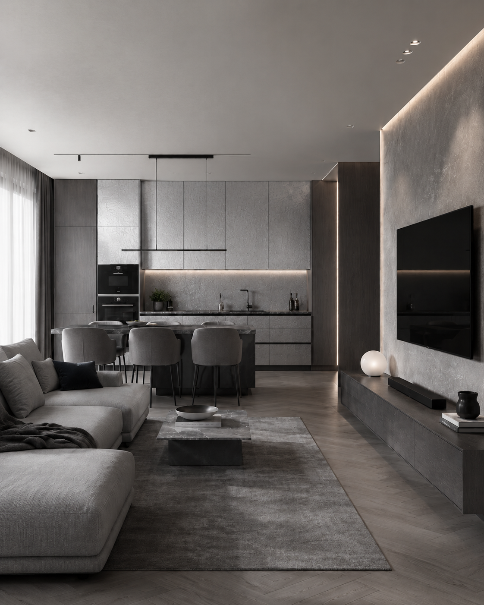
Фасады в декоративных маслах требуют такого же ухода, как обычные эмалевые фасады: мягкая губка или микрофибра, нейтральные моющие средства. Без агрессивной химии и абразивов.
Декорирование тончайшими листами металлического сплава — техника, известная с эпохи Возрождения. «CREPA» — крепированная (структурированная) поталь, в которой стыки и наложения листов остаются видимыми и формируют узнаваемый рисунок поверхности.

Это тончайшие листы металлического сплава, толщиной порядка 0,02 мм. Для золотых оттенков используют сплав меди и цинка, для серебряных — алюминий, для медных — чистую медь. Лист накладывается на специальный клеящий состав (мордан), после высыхания располировывается и закрепляется защитным лаком.
«CREPA» — это разновидность потали с морщинисто-структурированной поверхностью. Характерные стыки листов (~14×14 см), их наложения и микрорельеф формируют узнаваемую эстетику: поверхность выглядит как тщательно отреставрированная антикварная вещь, а не как ровное напыление.
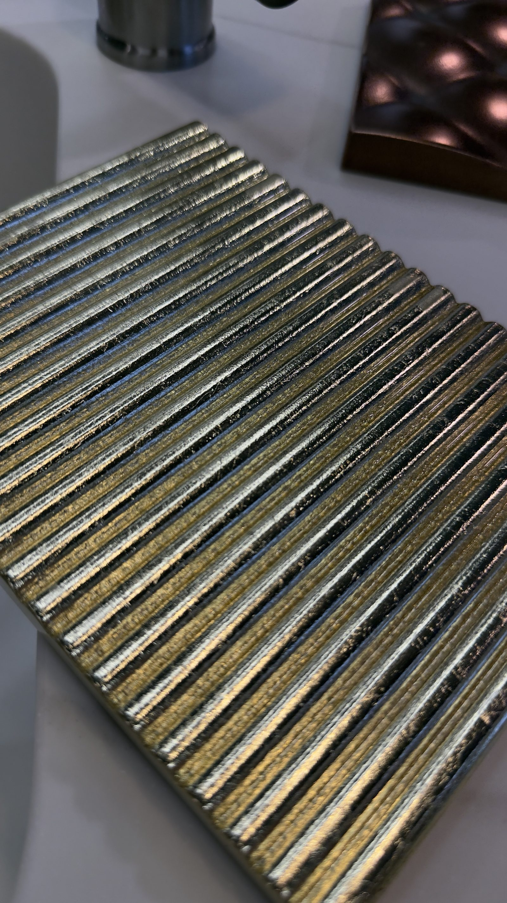
Покрытие поталью представлено в 3 базовых оттенках: золото, серебро и медь. Для реализации индивидуальных проектов мы можем подобрать цвет покрытия в соответствии с оттенком фурнитуры, сантехники или других элементов интерьера.
Одно из ключевых преимуществ потали — простота реставрации. Повреждённый участок переклеивается новым листочком сверху, после чего располировывается и покрывается лаком. Стыки и наложения уже заложены в эстетику материала, поэтому реставрация визуально незаметна.
— Защитный лак обязателен и входит в цену. Без него металл (особенно медь и серебро) окисляется: медь зеленеет, серебро темнеет. Лак контролирует процесс и стабилизирует цвет.
— Возможен выбор потали как по металлу — золото, серебро, медь, так и по оттенку самого металла. Уточняйте наличие у менеджеров.
Уход: мягкая губка или микрофибра, нейтральные моющие средства — без абразивов, кислот и щелочей.
Готовая металлическая фигура из нержавеющей стали врезается в фасад заподлицо с поверхностью. Возможна на крашеных и шпонированных фасадах, на плоских участках или подготовленных площадках во фрезеровке. Самостоятельная техника, которую можно сочетать с любым из покрытий выше — или применять отдельно.

Базовый каталог — стилизованные природные сюжеты из нержавеющей стали 1,2 мм. Каждая фигура считается как один элемент. Под каждой указаны стандартный размер и покрытие — сатин или полировка.
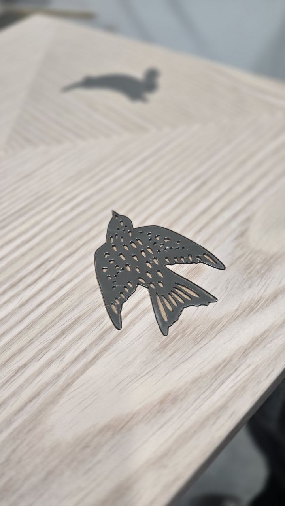
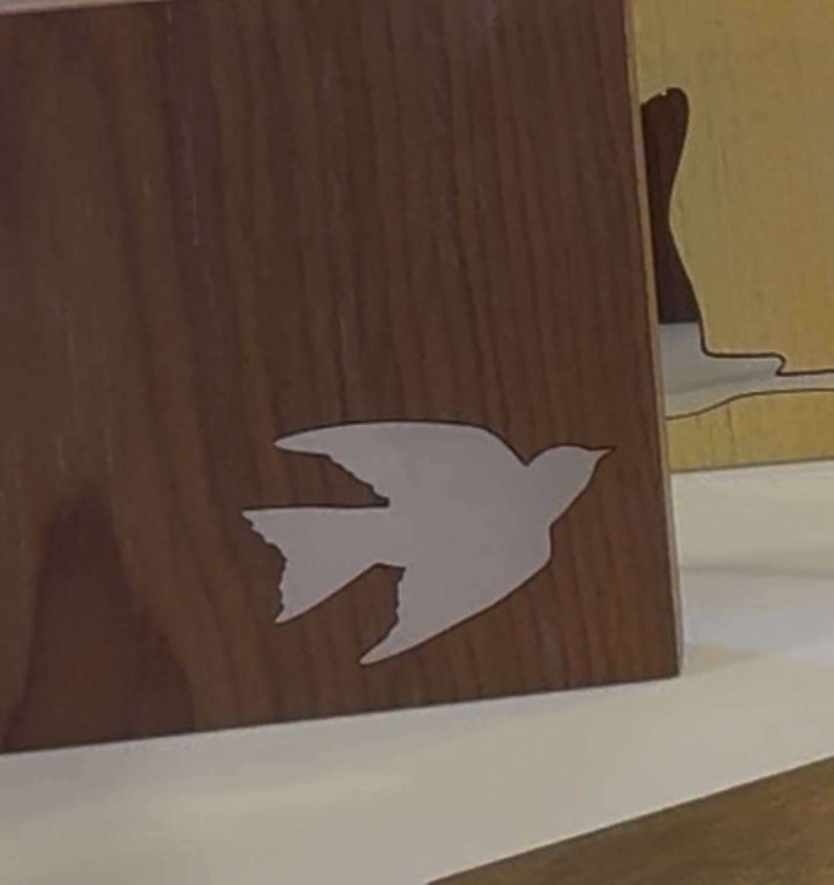
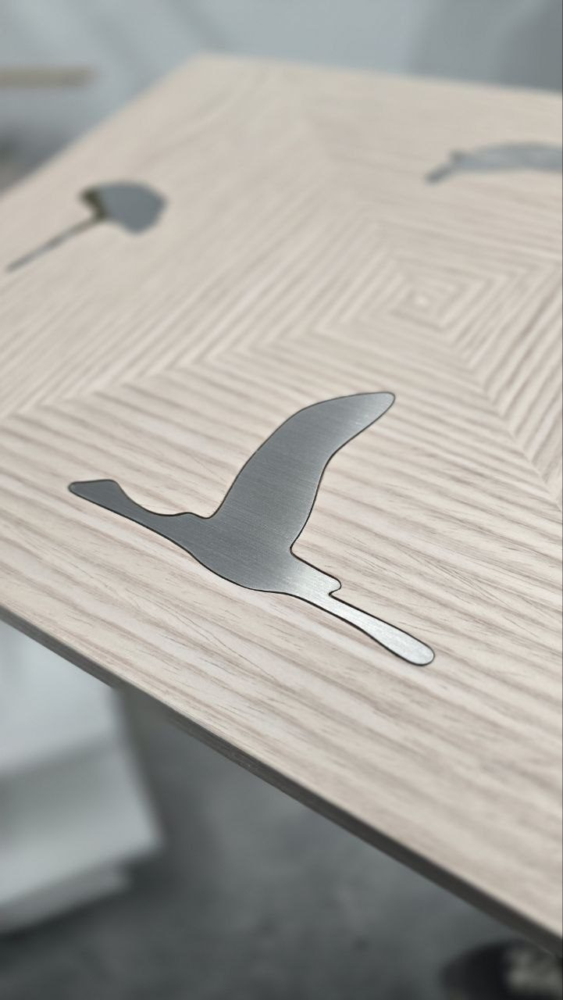
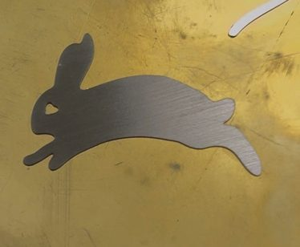
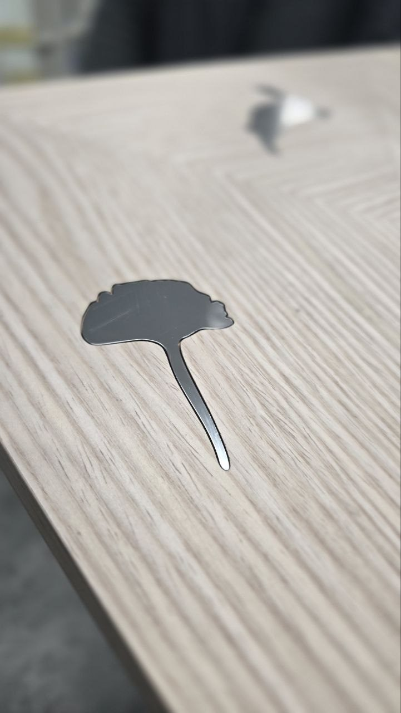
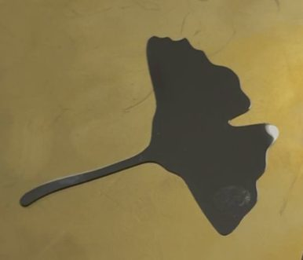
Можно изготовить фигуру, надпись или логотип любой формы — как вставку из металла, так и прямую выемку в однотонной эмали или патине.
Исходник — готовый файл в любом векторном формате либо качественное изображение в большом разрешении. Авторский эскиз рисует технолог по референсу через услугу «Отрисовка»: сам элемент стоит как из наличия — наценка только за отрисовку. Нестандартная фрезеровка принимается после согласования с производством.
— Материал: нержавеющая сталь 1,2 мм. На выбор сатин или полировка — два разных характера поверхности.
— Фигура устанавливается после покраски или лакировки фасада. Это позволяет точно совместить кромки и избежать загрязнения металла в процессе финишной обработки.
— На 3D и фрезерованных фасадах под фигуру готовится отдельная площадка — техника та же, что мы используем для интегрированных ручек.
Здесь нет вставки из металла: рисунок фрезеруется прямо в фасаде и патинируется. Графика «утоплена» в поверхность, а не лежит на ней — другой характер, чем у вставок из металла. Считается как дополнительная опция к фасаду, по прайс-листу.
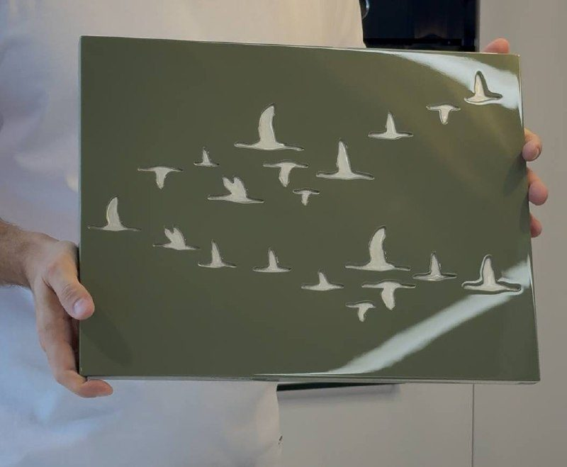
300 × 400 мм, выполняется только в эмали или патине (без металла). Другие фигуры, надписи и логотипы — по тому же принципу прямой выемки. Нестандартная фрезеровка принимается после согласования с производством.
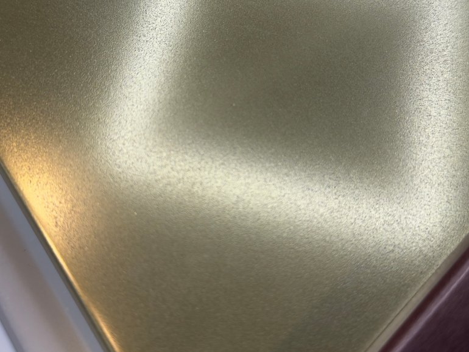
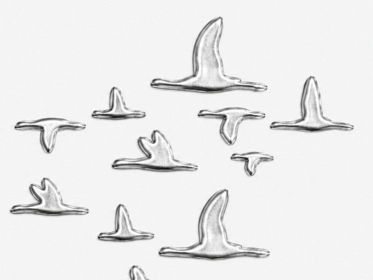
Графика, утопленная в поверхность, ведёт себя иначе, чем металлическая вставка — это самостоятельный декоративный приём с собственным характером.
Можно делать готовые элементы каталога или индивидуальную графику — фигуры, узоры, надписи, логотипы.
«Пилотник» — пробный фасад в размере, необходимом заказчику для оценки (обычно 300×400 или 200×200).
Минимальный заказ — один квадратный метр. По образцам — аналогично.
Средний срок изготовления образца. Цвет и фактура — индивидуально под заказ.
Запуск производства — только после согласования образца. Это страхует от расхождения ожиданий.
Каждый фасад уникален. Лёгкие риски, разнородная располировка, вкрапления — норма материала и часть эстетики.
Финальный расчёт — по площади фасадов и сложности геометрии. Стартовые цифры в разделах — за гладкие фасады.
Покрытия декоративные. Для столешниц и фартуков не подходят — слишком интенсивная эксплуатация.
Короткая шпаргалка для тех, кто предлагает эти покрытия конечным клиентам: кому, почему и как.